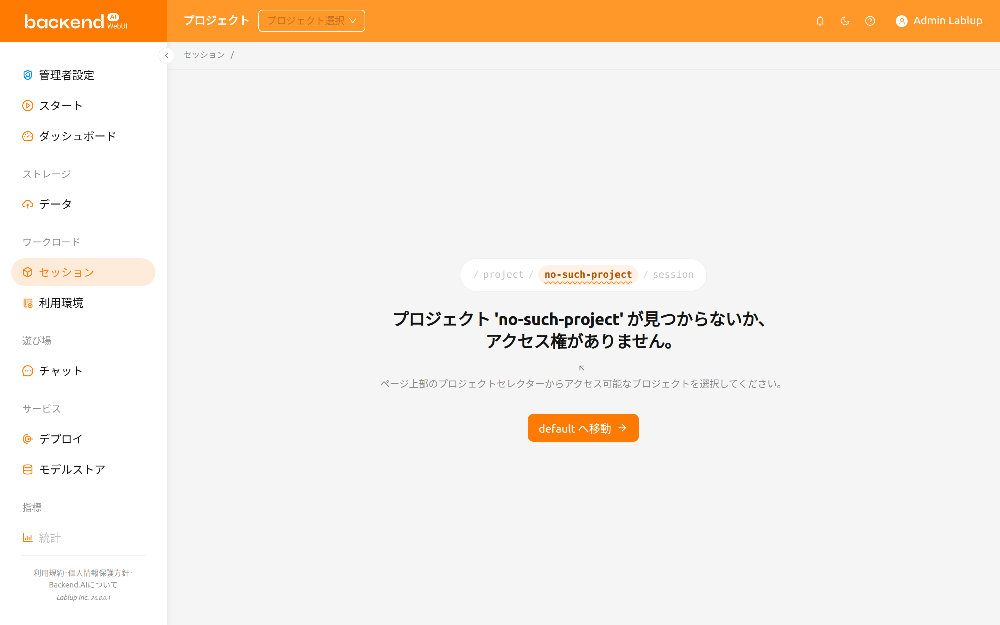
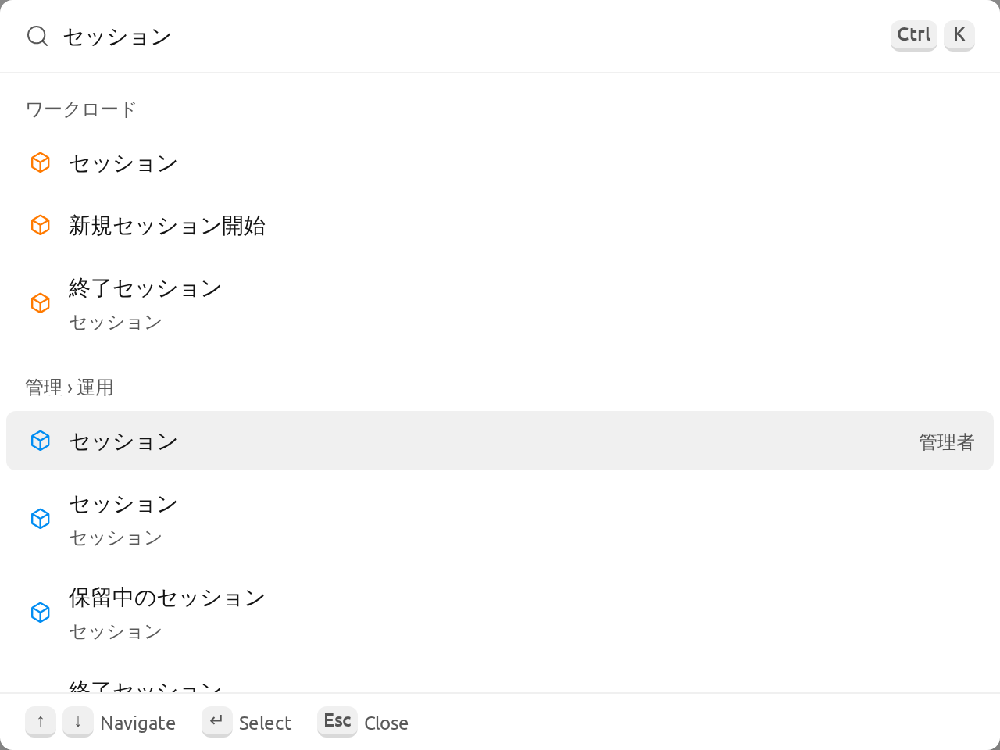
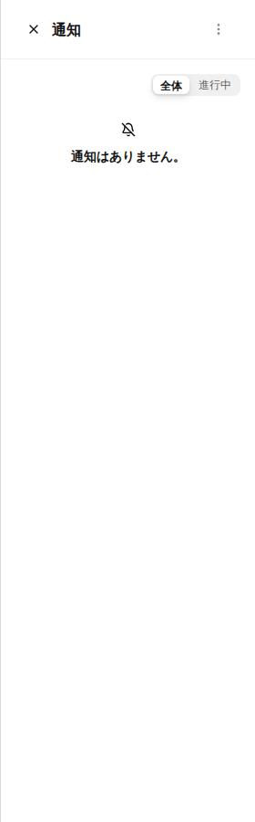
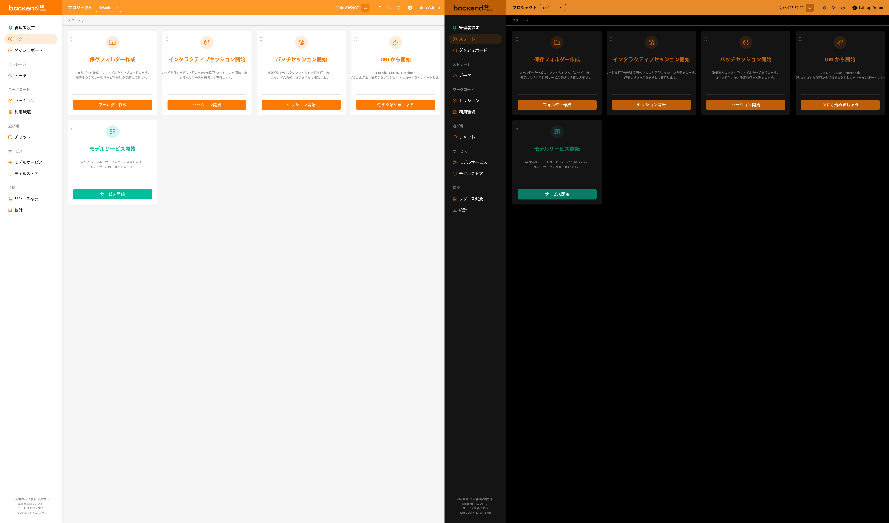
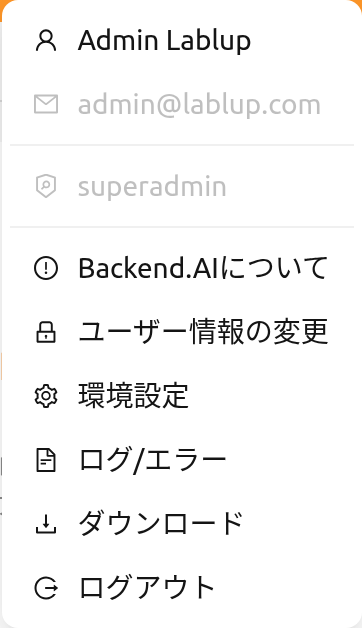
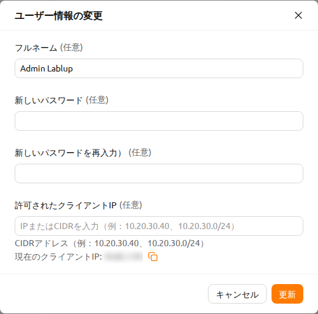
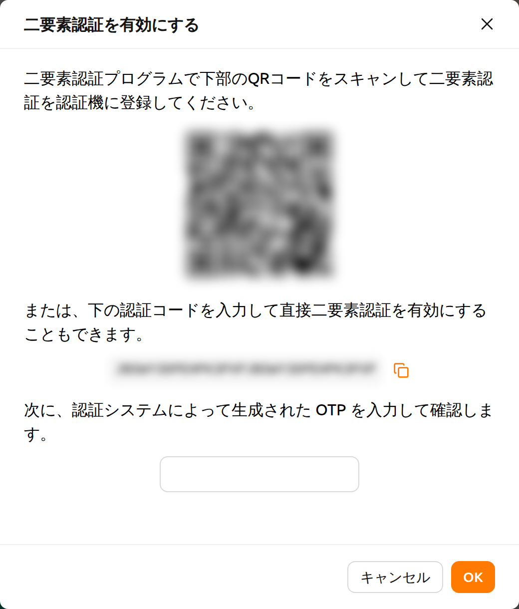
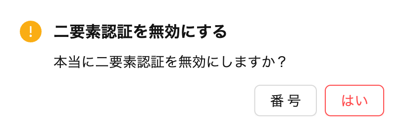
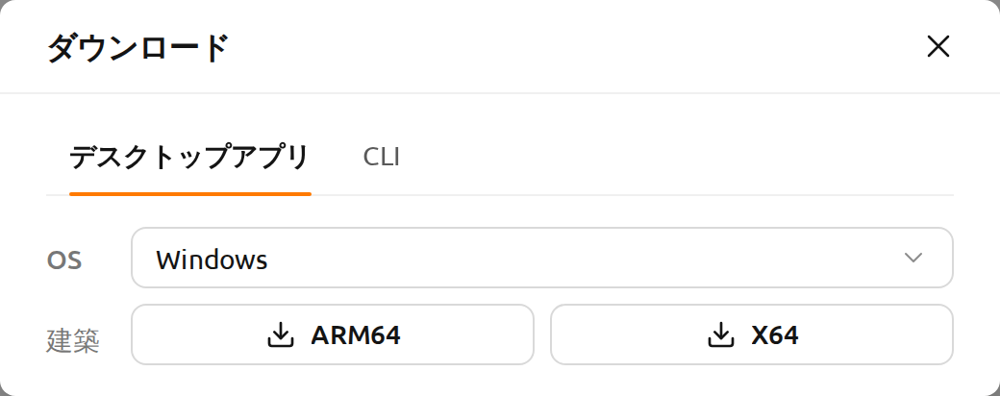
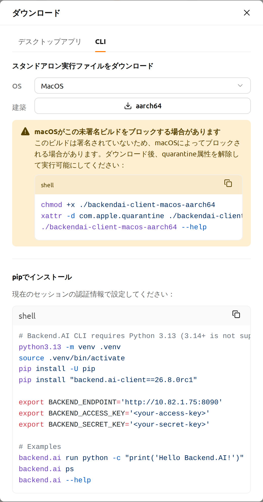

トップバー機能#
トップバーには、WebUIの使用をサポートするさまざまな機能が含まれています。
プロジェクトセレクター#
トップバーのプロジェクトセレクターを使用して、プロジェクトを切り替えることができます。各プロジェクトには異なるリソースポリシーが設定されている場合があるため、プロジェクトを切り替えると利用可能なリソースポリシーも変更される場合があります。
プロジェクトセレクターにはアクセスできるプロジェクトが表示されます。存在しない、またはアクセス権のないプロジェクト名を 含むアドレスを開いた場合、別のプロジェクトへ勝手に切り替わることはなく、プロジェクトセレクターは 未選択の状態で表示され、ページに状況が案内されます。

プロジェクト '<name>' が見つからないか、アクセス権がありません。というメッセージが表示されます。- その下に、ページ上部のプロジェクトセレクターからアクセス可能なプロジェクトを選択するよう促す 案内が表示されます。
<project> へ移動ボタンをクリックすると、アクセス可能なプロジェクトへ移動します。
所属しているプロジェクトが1つもない場合は、アクセス可能なプロジェクトがありません。と
管理者にプロジェクトへのアクセス権を依頼してください。が表示されます。
管理者設定配下の管理者ページ（/admin/で始まるアドレス）では、プロジェクトセレクターは
表示されません。これらのページは特定のプロジェクト内ではなく、すべてのプロジェクトを対象に
動作するため、そのページを表示している間はトップバーからセレクターが非表示になります。選択内容は
変更されないため、管理者ページから移動すると、以前に選択していたプロジェクトがそのまま選択された
状態になります。管理者ページでプロジェクトが必要な場合は、ページまたはダイアログで明示的に
プロジェクトを選択します。たとえば、管理者データページのフォルダ作成ダイアログには対象プロジェクト
項目があり、イメージのインストールダイアログにはインストールセッションのプロジェクト項目があります。
ログインセッションタイマー#
ログインセッション管理が有効な場合、トップバーに自動ログアウトまでの残り時間と延長ボタンが表示されます。タイマーはHH:mm:ss形式で表示され、24時間以上の場合は日数も併せて表示されます。
タイマーの横にある延長ボタン（リピートアイコン）をクリックすると、セッションの有効期限がリセットされ、ログインセッションが延長されます。
ログインセッションタイマーは、サーバーがログインセッション延長をサポートし、システム設定で有効化されている場合のみ表示されます。
検索#
虫眼鏡ボタンをクリックすると検索パレットが開き、キーボードだけで任意のページ、ページタブ、設定項目に移動できます。
検索パレットは実験的機能で、既定では無効になっています。ユーザー設定ページの実験的特徴にあるコマンドパレット項目を有効にした場合にのみ、上部バーに検索ボタンが表示され、ショートカットが動作します。
ボタンをクリックするか、Ctrl-K(macOSではCmd-K)を押すとパレットが開きます。入力フィールドにカーソルがある状態でもショートカットを使用できます。

ページ、タブ、設定を検索というプレースホルダーが表示された検索欄に入力すると、ページ、ページタブ、設定項目をまとめて検索できます。項目の名前ではなく説明が一致した場合は、どこで見つかったかを示す...内で見つかりましたという行が表示され、管理者メニューに属する結果には管理者またはプロジェクト管理者のタグが付きます。入力した内容に一致する項目がない場合は検索結果がありませんと表示されます。
パレットでは、次の3つのグループのクイックアクションも利用できます。
作成: 新規セッション開始、フォルダー作成、デプロイを作成表示: ダークモードまたはライトモードに切り替え、システム設定を使用する、UI言語を変更パネルとヘルプ: ユーザー設定を開く、お知らせを開く、サイドバーの開閉、このページのマニュアルを開く
何も入力していない状態では、最近開いた結果が最近の項目の下に表示されます。
通知#
ベル型のボタンは、イベント通知ボタンです。WebUIの操作中に記録する必要があるイベントがここに表示されます。コンピュートセッションの作成など、バックグラウンドタスクが実行されている場合、ここでジョブを確認できます。
ショートカットキー(])を押して通知エリアを開閉できます。

画面モード#
ライトモード/ダークモードボタンを使って、WebUIの画面モードを変更できます。

ヘルプ#
疑問符ボタンをクリックすると、本ガイドドキュメントのウェブ版にアクセスできます。リンク先は、 現在使用しているWebUIに合わせて構成されます。
レスポンシブレイアウト#
画面幅が狭い場合、トップバーは使いやすさを向上させるためにレイアウトを調整します。画面幅が狭くなると、サイドバートグルの代わりにメニューアイコンボタンがトップバーに表示されます。ユーザーの表示名が非表示になり、ユーザーメニューにはアバターアイコンのみが表示される場合があります。非常に小さい画面では、プロジェクトのラベルテキストも非表示になります。
ユーザーメニュー#
トップバーの右側にあるユーザーアイコンをクリックすると、ユーザーメニューが表示されます。

ドロップダウンの上部には、以下のユーザー情報が表示されます。これらの項目はクリックできない参考情報です。
- フルネーム: 現在のユーザーのフルネーム。
- メール: 現在のユーザーのメールアドレス。
- ロール: 現在のユーザーのロール（例: ユーザー、スーパー管理者）。
ユーザー情報の下には、以下のアクション項目があります。
Backend.AIについて: Backend.AI WebUIのバージョン、ライセンスの種類などの情報を表示します。ユーザー情報の変更: 現在ログインしているユーザーの情報を確認・更新します。環境設定: 現在のページの上にユーザー設定ダイアログを開きます。ログ カテゴリでクライアント側に記録されたログとエラーの履歴を確認できます。ダウンロード: ダウンロードダイアログを開きます。スタンドアロンのWebUIデスクトップアプリと、Backend.AIコマンドラインインターフェース（CLI）を入手できます。この項目は、管理者がいずれか一方以上を有効にした場合のみ表示されます。ログアウト: WebUIからログアウトします。
ユーザー情報の変更#
ユーザー情報の変更をクリックすると、ユーザー情報の変更ダイアログが表示されます。

各項目には以下の意味があります。希望する値を入力し、更新ボタンをクリックして ユーザー情報を更新します。
- フルネーム: ユーザーの名前（最大64文字）。
- 新しいパスワード: 新しいパスワード（英字、数字、記号をそれぞれ1つ以上含む 8文字以上）。目のアイコンをクリックすると入力内容を確認できます。
- 新しいパスワードを再入力）: 確認のため、新しいパスワードを再度入力します。
- 許可されたクライアントIP: 特定のIPアドレスまたはCIDR範囲でログインアクセスを
制限します。1つ以上のIPアドレスまたはCIDR表記（例：
10.20.30.40、10.20.30.0/24）を入力できます。フィールドの下には、現在のクライアントIP アドレスがコピーボタンとともに表示されます。設定されたリストに現在のIPが 含まれていない場合、警告が表示されます。 - 二要素認証の使用: 二要素認証（2FA）を有効または無効にします。有効にすると、 ログイン時にOTPコードの入力が必要になります。
プラグインの設定によっては、二要素認証の使用項目が表示されない場合があります。
その場合は、システム管理者に連絡してください。
2FA設定#
2FA Enabledスイッチを有効にすると、次のダイアログが表示されます。

使用している2FAアプリケーションを起動し、QRコードをスキャンするか、手動で検証コードを入力します。2FA対応のアプリケーションには、Google Authenticator、2STP、1Password、Bitwardenなどがあります。
2FAアプリケーションに追加された項目から6桁のコードを上記のダイアログに入力します。確認ボタンを押すと、2FAが有効になります。
後でログインする際に、メールアドレスとパスワードを入力すると、OTPコードを求める追加フィールドが表示されます。

ログインするには、2FAアプリケーションを開き、ワンタイムパスワードフィールドに6桁のコードを入力する必要があります。

2FAを無効にするには、2FA Enabledスイッチをオフにし、表示されるダイアログで確認ボタンをクリックします。
ダウンロード#
ダウンロードを選択すると、管理者が有効にした項目ごとにタブが用意されたダイアログが表示されます。
タブはデスクトップアプリとCLIです。

デスクトップアプリタブでは、OSの項目で使用しているオペレーティングシステムを選択し、
使用しているCPUアーキテクチャのボタンをクリックするとダウンロードが始まります。スタンドアロン
アプリを使うと、ブラウザなしで同じWebUIを利用できます。

CLIタブでは、コマンドラインクライアントを使い始める方法が2つ用意されています。
- スタンドアロン実行ファイルをダウンロード: 使用しているオペレーティングシステムを選択し、
使用しているCPUアーキテクチャのボタンをクリックします。LinuxとmacOSのビルドが提供されます。
ダウンロード後は、ボタンの下に表示されたコマンドを実行して実行権限を付与し、必要に応じて
PATH上にbackend.aiとしてインストールできます。macOSの場合はビルドがまだ署名されていないため、 代わりにquarantine属性を先に解除する方法が案内されます。 - pipでインストール: Python仮想環境を作成し、接続中のサーバーとバージョンが一致する クライアントをインストールし、クライアントに必要な環境変数を設定するスニペットが表示されます。 スニペット右上のコピーボタンをクリックすると、全体をコピーできます。
スニペットには現在のセッションのエンドポイントが自動で入力されますが、認証情報は表示されません。
実行する前に<your-access-key>と<your-secret-key>をご自身のキーペアに置き換えてください。
また、スニペットはクライアントが必要とするPython 3.13を使用するよう固定しています。